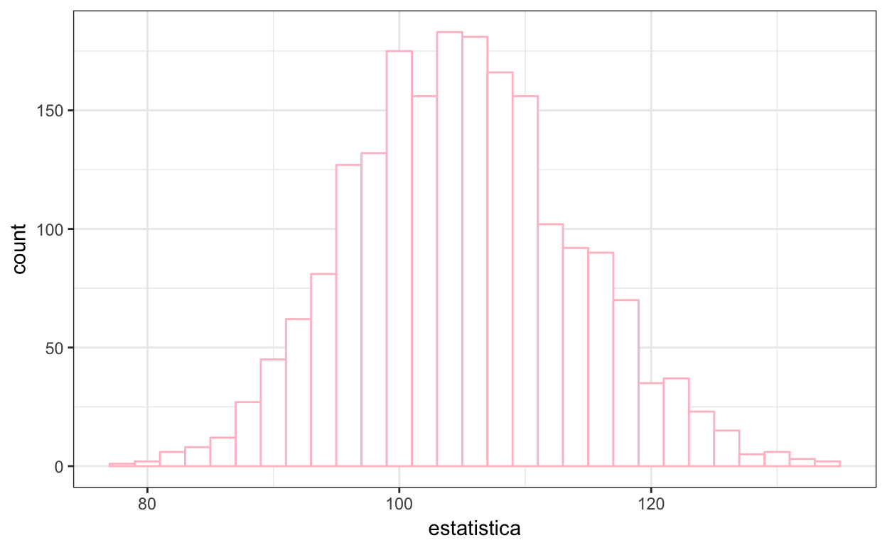
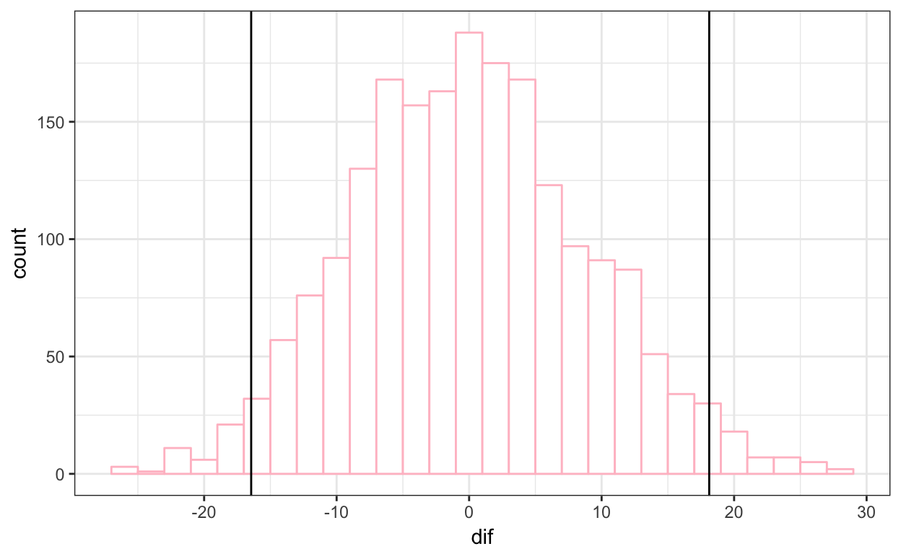
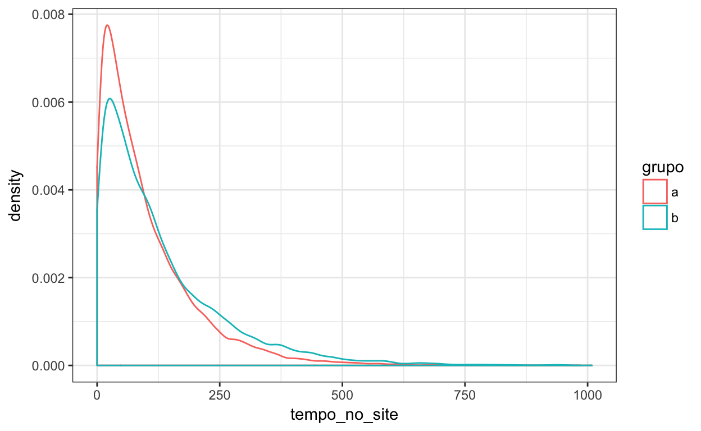
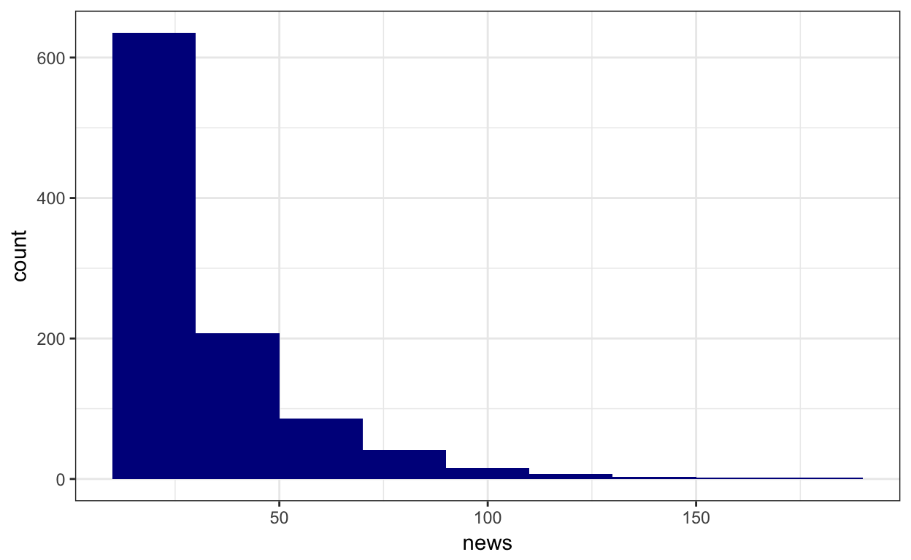
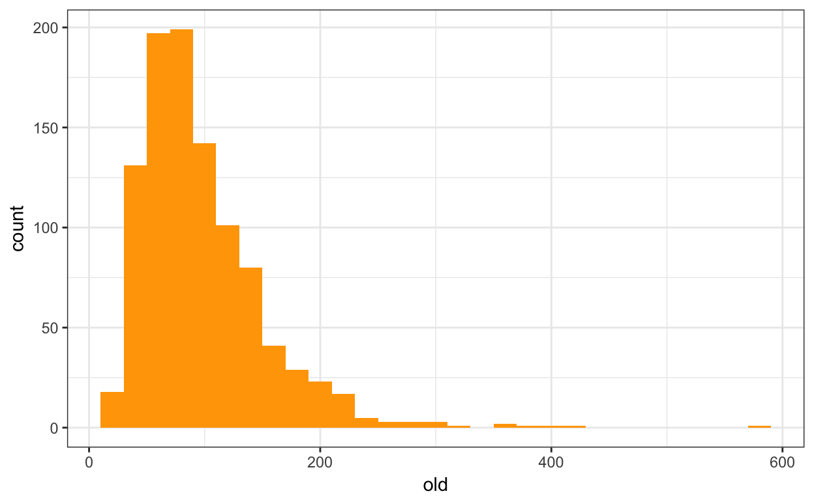
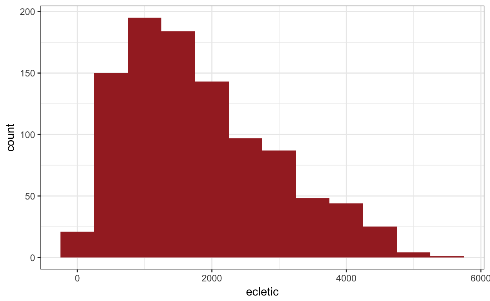
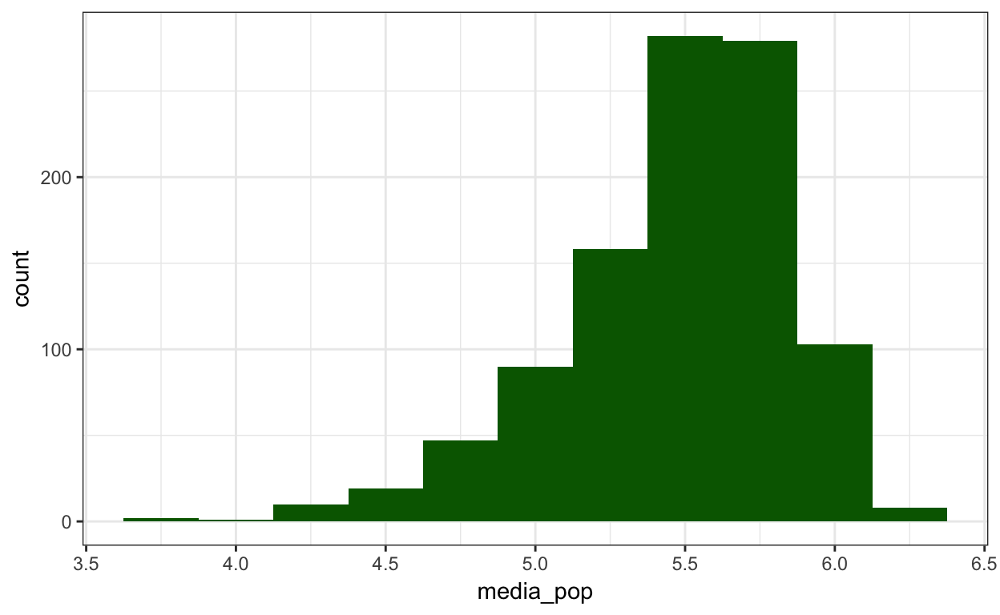
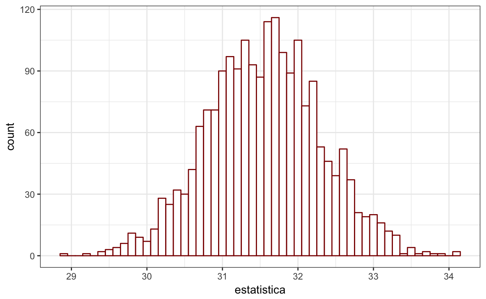

Intervalos de confiança
Este é um tutorial para lhe colocar em contato com bootstrap para intervalos de confiança na prática. Este notebook é um tutorial interativo. Se você estiver lendo o código no RStudio, não faça isso. clique em Run Document em cima e à esquerda no RStudio.
Ao mesmo tempo, na medida que você for produzindo código, você pode querer salvá-lo em algum outro notebook, já que quando você fechar o tutorial ele se perderá.
Outra coisa: os 4 primeiros notebooks em https://github.com/nazareno/ciencia-de-dados-1/tree/master/4-Inferencia são sobre intervalos de confiança e bootstrap. E tem código. Tem também vários links de livros online no canvas. Na medida que precisar, revise lá.
Outra dica
Lembre que existe mais de um algoritmo para estimar o IC a partir da distribuição amostral que derivamos do bootstrap. Principalmente: em situações onde essa distribuição amostral é enviesada para um lado (longe de simétrica), o método BCA é bem mais confiável que o Basic:
boot.ci(boot.out = res.boot,
conf = 0.95,
type = "basic")
# ou
boot.ci(boot.out = res.boot,
conf = 0.95,
type = "bca")Um IC com uma população sintética
O começo
Para ganhar intimidade com a ideia de inferência um bom começo é criarmos populações sintéticas que nós sabemos exatamente como funcionam, e simularmos o processo de inferência de estatísticas dela a partir de amostras. Não faremos isso em nossa pesquisa na prática, mas a simulação ajuda muito a entender os conceitos.
Por exemplo, com seguinte população:
set.seed(1234)
populacao1 = tibble(participante = 1:10000,
tempo_no_site = 100 * rweibull(10000, 1, 1))
glimpse(populacao1)## Observations: 10,000
## Variables: 2
## $ participante <int> 1, 2, 3, 4, 5, 6, 7, 8, 9, 10, 11, 12, 13, 14, 1...
## $ tempo_no_site <dbl> 217.416188, 47.433394, 49.548599, 47.259989, 14....populacao1 %>%
ggplot(aes(x = tempo_no_site)) +
geom_histogram(binwidth = 10)
summary(populacao1$tempo_no_site)## Min. 1st Qu. Median Mean 3rd Qu. Max.
## 0.0406 29.1028 69.0619 99.3422 137.6394 798.1248Lembre: esta é a população.
Se um pesquisador realizar uma amostra dessa população e quiser inferir por exemplo onde está a média de tempo_no_site na população:
uma_amostra = sample_n(populacao1, 100)
glimpse(uma_amostra)## Observations: 100
## Variables: 2
## $ participante <int> 2047, 4842, 6357, 9590, 1787, 2883, 3867, 765, 2...
## $ tempo_no_site <dbl> 147.32112, 43.20803, 53.43050, 65.14842, 29.2728...funcao_bootstrap <- function(dado, indices){
d = dado %>%
slice(indices) %>% # slice(x, c(1, 4, 5)) retorna um vetor com os elementos nos índices 1, 4 e 5 de x
pull(tempo_no_site) # tempo_no_site é o nome da variável que nos interessa
return(mean(d))
}
bootstraps <- boot(data = uma_amostra,
statistic = funcao_bootstrap, # <- referência para a função
R = 2000) # número de bootstraps## Warning: package 'bindrcpp' was built under R version 3.4.4glimpse(bootstraps$t)## num [1:2000, 1] 104.2 108.6 102.6 94.2 99 ...E essa seria a distribuição amostral estimada via bootstrap:
tibble(estatistica = as.double(bootstraps$t)) %>%
ggplot(aes(x = estatistica)) +
geom_histogram(binwidth = 2, fill = "white", color = "pink")
Essa é a faixa de valores necessária em relação à media da amostra que temos para incluir a média nos bootstraps 95% do tempo:
diferencas = tibble(dif = as.double(bootstraps$t) - mean(uma_amostra$tempo_no_site))
diferencas %>%
ggplot(aes(x = dif)) +
geom_histogram(binwidth = 2, fill = "white", color = "pink") +
geom_vline(xintercept = quantile(diferencas$dif, 0.025)[[1]]) +
geom_vline(xintercept = quantile(diferencas$dif, 0.975)[[1]])
Com essa informação, podemos (pedir à biblioteca para) calcular o intervalo de confiança para a média:
boot.ci(bootstraps, conf = 0.95, type = "basic")## BOOTSTRAP CONFIDENCE INTERVAL CALCULATIONS
## Based on 2000 bootstrap replicates
##
## CALL :
## boot.ci(boot.out = bootstraps, conf = 0.95, type = "basic")
##
## Intervals :
## Level Basic
## 95% ( 86.8, 121.5 )
## Calculations and Intervals on Original ScaleO IC inclui a média da população? Era esperado? Podia não ter incluído?
Agora você
Baseado no código acima, calcule o IC da mediana dessa mesma variável. Use a mesma variável amostra.
Podemos afirmar se valor da média é superior ou inferior ao da mediana (na população)? Isso era esperado?
IC das diferenças, sintético
Agora façamos o seguinte: vamos gerar um conjunto de dados onde há dois grupos de observações, e fazer inferências sobre a comparação dessa estatística para os dois grupos na população.
Quando há diferença
set.seed(1234)
grupo1 = tibble(participante = 1:10000,
grupo = "a",
tempo_no_site = 100 * rweibull(10000, 1, 1))
grupo2 = tibble(participante = 1:10000,
grupo = "b",
tempo_no_site = 100 * rweibull(10000, 1, 1.3))
populacao2 = bind_rows(grupo1, grupo2)
glimpse(populacao2)## Observations: 20,000
## Variables: 3
## $ participante <int> 1, 2, 3, 4, 5, 6, 7, 8, 9, 10, 11, 12, 13, 14, 1...
## $ grupo <chr> "a", "a", "a", "a", "a", "a", "a", "a", "a", "a"...
## $ tempo_no_site <dbl> 217.416188, 47.433394, 49.548599, 47.259989, 14....populacao2 %>%
ggplot(aes(x = tempo_no_site, color = grupo)) +
geom_density()
populacao2 %>%
group_by(grupo) %>%
summarise_all(funs(mean, median))De novo, faremos uma amostra da população:
set.seed(123)
amostra_2grupos = sample_n(populacao2, 150)
amostra_2grupos %>%
group_by(grupo) %>%
summarise_all(funs(mean, median))Essa diferença entre as médias que observamos na amostra é significativa? Ou seja, temos confiança de que ela acontece na populaçõa?
Para inferir sobre a diferença na média de tempo_no_site na população, precisamos alterar a função funcao_boostrap:
funcao_bootstrap <- function(dado, indices){
d = dado %>%
slice(indices) %>%
group_by(grupo) %>%
summarise(media_grupo = mean(tempo_no_site)) %>%
pull(media_grupo)
return(d[1] - d[2])
}
bootstraps <- boot(data = amostra_2grupos,
statistic = funcao_bootstrap, # <- referência para a função
R = 2000) # número de bootstraps
glimpse(bootstraps$t)## num [1:2000, 1] -49.3 -82 -24.2 -62.6 -62.1 ...boot.ci(bootstraps, conf = 0.95, type = "basic")## BOOTSTRAP CONFIDENCE INTERVAL CALCULATIONS
## Based on 2000 bootstrap replicates
##
## CALL :
## boot.ci(boot.out = bootstraps, conf = 0.95, type = "basic")
##
## Intervals :
## Level Basic
## 95% (-88.05, -25.14 )
## Calculations and Intervals on Original ScaleE aí?
E quando não há diferença na população?
Parta do exemplo abaixo e gere uma população onde os grupos a e b tem exatamente o mesmo valor da média.
Em seguida, gere uma amostra de 200 observações dessa população.
Na amostra há diferença entre as médias??
Por fim, faça o IC da diferença das médias: o que a inferência nos diz sobre a população? Está correto?
set.seed(1234)
grupo1 = tibble(participante = 1:10000,
grupo = "a",
tempo_no_site = 100 * rweibull(10000, 1, 1))
grupo2 = tibble(participante = 1:10000,
grupo = "b",
tempo_no_site = 100 * rweibull(10000, 1, 1.3))
populacao2 = bind_rows(grupo1, grupo2)
glimpse(populacao2)
populacao2 %>%
ggplot(aes(x = tempo_no_site, color = grupo)) +
geom_density()
populacao2 %>%
group_by(grupo) %>%
summarise_all(funs(mean, median))Dados do Last.fm
Para um exemplo mais real, utilizaremos como dados uma amostra dataset do experimento com usuários do Lastfm sobre o qual conversamos em sala.
## Observations: 999
## Variables: 5
## $ user <chr> "slesarjuk", "SheenaFee", "Schimpansky", "Tomolo", "...
## $ ecletic <dbl> 1133.8610, 4095.1197, 2750.0722, 3878.3820, 504.0433...
## $ media_pop <dbl> 5.706154, 5.093055, 5.359102, 5.694531, 5.485194, 5....
## $ news <int> 16, 22, 34, 19, 29, 36, 15, 13, 12, 11, 26, 11, 32, ...
## $ old <int> 82, 49, 110, 101, 63, 75, 97, 58, 48, 106, 112, 43, ...
Se quisermos estimar onde está a média do número de artistas novos escutados pelos participantes do experimento, nosso código seria algo desse tipo:
funcao_bootstrap <- function(dado, indices){
d = dado %>%
slice(indices) %>% # slice(x, c(1, 4, 5)) retorna um vetor com os elementos nos índices 1, 4 e 5 de x
pull(news) # news é o nome da variável que nos interessa
return(mean(d))
}
bootstraps <- boot(data = amostra,
statistic = funcao_bootstrap, # <- referência para a função
R = 2000) # número de bootstraps
glimpse(bootstraps$t)## num [1:2000, 1] 32 32.2 31.9 32.8 31 ...E essa seria a distribuição amostral estimada via bootstrap:
tibble(estatistica = as.double(bootstraps$t)) %>%
ggplot(aes(x = estatistica)) +
geom_histogram(binwidth = .1, fill = "white", color = "darkred")
boot.ci(bootstraps, conf = 0.95, type = "basic")## BOOTSTRAP CONFIDENCE INTERVAL CALCULATIONS
## Based on 2000 bootstrap replicates
##
## CALL :
## boot.ci(boot.out = bootstraps, conf = 0.95, type = "basic")
##
## Intervals :
## Level Basic
## 95% (30.02, 32.97 )
## Calculations and Intervals on Original ScaleCalcule o IC da mediana dessa variável. Dá para afirmarmos se valor da média é superior ou inferior ao da mediana (na população)? Isso era esperado?
Diferenças via ICs
Ok, agora suponha que queiramos calcular se o número de artistas novos escutados pelos participantes de nosso experimento é maior ou menor que o número de artistas do conjunto que usamos para determinar o que ele já conhecia. Calcule os ICs para ambos e proponha uma resposta.
E conseguimos estimar o tamanho da diferença?
ICs da diferença
Para que possamos estimar o IC da diferença, precisamos definir a estatística diferença entre novos e antigos e aí estimar o IC dela.
Podemos afirmar com o nível de confiança que você escolheu que ela é diferente de zero?
amostra = amostra %>%
mutate(diferenca = news/2 - old/2)Diferenças não pareadas
Pelo método anterior, era possível calcular a diferença entre news e old para cada participante do experimento. Isso se chama diferença pareada. Se quisermos calcular a diferença entre (a) a quantidade de novos artistas escutados por um subgrupo dos participantes que gosta muito de artistas populares pop e (b) a quantidade de novos artistas escutados por um subgrupo dos participantes que gosta mais de artistas obscuros, eles subgrupos serão de participantes diferentes. Por isso, não poderemos fazer uma diferença pareada.
Reescreva a função funcao_bootstrap para que ela faça a diferença das médias em cada boostrap e calcule abaixo o IC da diferença não-pareada. Podemos afirmar com 95% de confiança que ela é diferente de zero? O que isso significa?
amostra = amostra %>%
filter(media_pop > 5.74 | media_pop < 5.2) %>% # <- deixa apenas os extremos
mutate(gosta_de_pop = media_pop > 5.7)